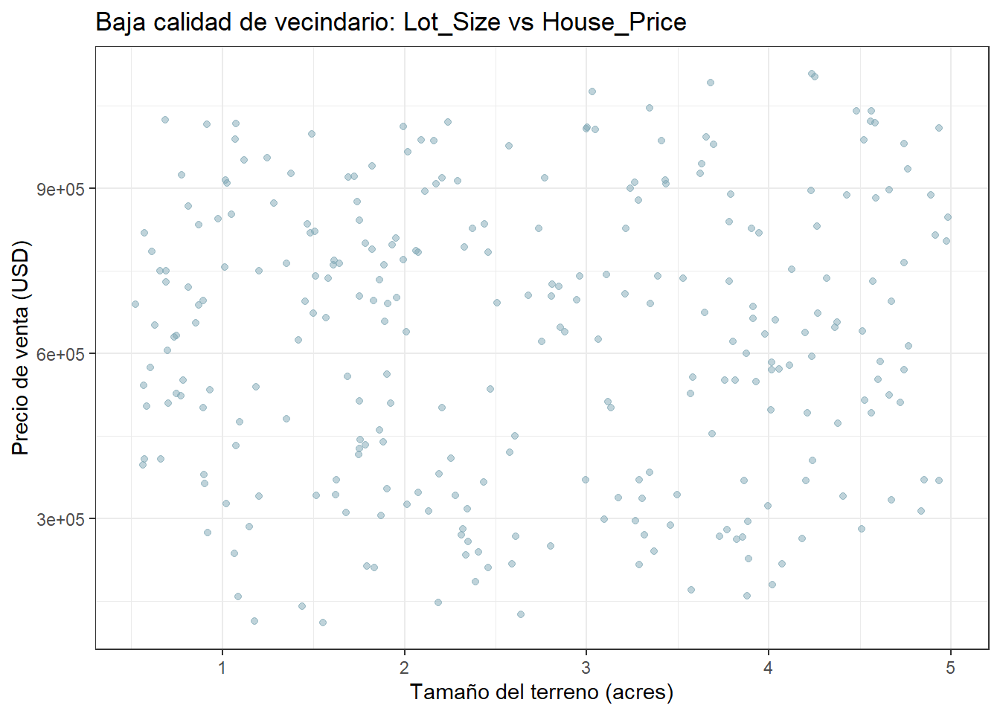
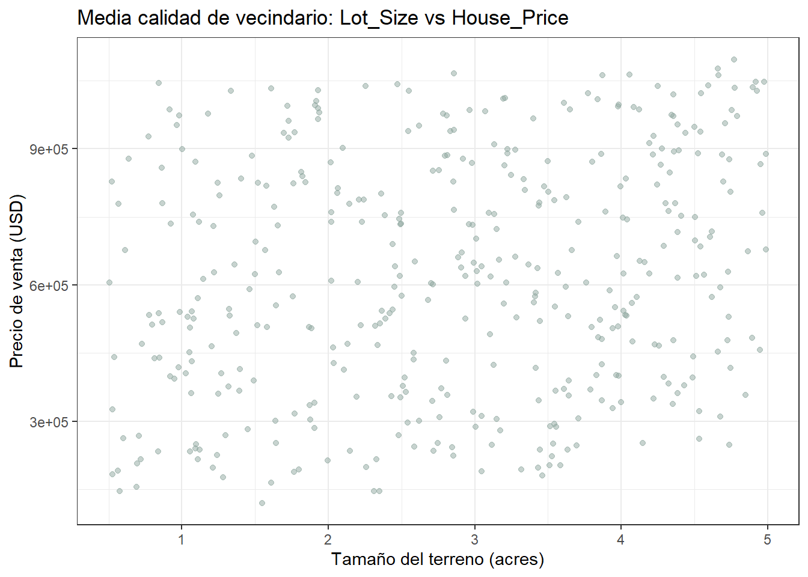
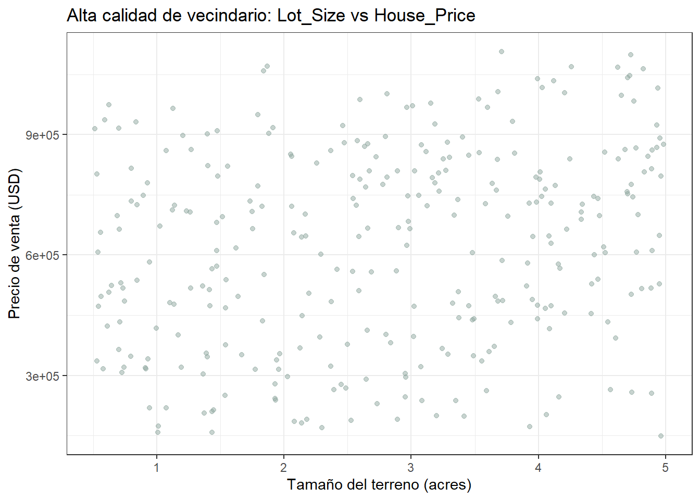

8 Comparación de la relación Lot_Size-House_Price según la calidad del vecindario
Para saber si la calidad del vecindario cambia la forma en que el tamaño del terreno se relaciona con el precio de la vivienda, hay que separar las observaciones según ese entorno y preguntarse, grupo por grupo, si la relación se sostiene o no.
df <- df %>%
mutate(
Calidad_Grupo = case_when(
Neighborhood_Quality <= 3 ~ "Baja",
Neighborhood_Quality <= 7 ~ "Media",
Neighborhood_Quality >= 8 ~ "Alta"
),
Calidad_Grupo = factor(Calidad_Grupo, levels = c("Baja", "Media", "Alta"))
)
table(df$Calidad_Grupo)##
## Baja Media Alta
## 281 411 308El grupo de calidad media concentra a más de la mitad de las viviendas (411), mientras que Baja (281) y Alta (308) quedan más equilibrados entre sí, una consecuencia esperable de agrupar una escala de 1 a 10 en solo tres bloques desiguales (1-3, 4-7, 8-10).
baja <- df %>% filter(Calidad_Grupo == "Baja")
media <- df %>% filter(Calidad_Grupo == "Media")
alta <- df %>% filter(Calidad_Grupo == "Alta")Con los tres grupos ya separados, empecemos por el extremo inferior de la escala y vayamos subiendo.
8.1 Grupo: Baja calidad
baja %>%
ggplot(aes(x = Lot_Size, y = House_Price)) +
geom_point(color = "#7fa8b5", alpha = 0.5) +
labs(title = "Baja calidad de vecindario: Lot_Size vs House_Price",
x = "Tamaño del terreno (acres)", y = "Precio de venta (USD)") +
theme_bw()
## [1] 0.02826173De las 281 viviendas en vecindarios de baja calidad, la nube de puntos cubre todo el rango de precios (desde poco más de USD 110.000 hasta cerca de USD 1.1 millones) para cualquier tamaño de terreno, sin ninguna inclinación perceptible.
X <- baja$Lot_Size
Y <- baja$House_Price
n_baja <- length(X)
x_bar <- mean(X); y_bar <- mean(Y)
Sxx_baja <- sum((X - x_bar)^2)
Sxy_baja <- sum((X - x_bar) * (Y - y_bar))
beta1_baja <- Sxy_baja / Sxx_baja
beta0_baja <- y_bar - beta1_baja * x_bar
beta0_baja; beta1_baja## [1] 608681.5## [1] 5519.097##
## Call:
## lm(formula = House_Price ~ Lot_Size, data = baja)
##
## Residuals:
## Min 1Q Median 3Q Max
## -505623 -226020 22571 203828 476189
##
## Coefficients:
## Estimate Std. Error t value Pr(>|t|)
## (Intercept) 608682 34546 17.620 <2e-16 ***
## Lot_Size 5519 11687 0.472 0.637
## ---
## Signif. codes: 0 '***' 0.001 '**' 0.01 '*' 0.05 '.' 0.1 ' ' 1
##
## Residual standard error: 255100 on 279 degrees of freedom
## Multiple R-squared: 0.0007987, Adjusted R-squared: -0.002783
## F-statistic: 0.223 on 1 and 279 DF, p-value: 0.6371El cálculo manual (β̂₁ = 5.519, β̂₀ = 608.681) coincide exactamente con lo que entrega lm(), confirmando que la fórmula de mínimos cuadrados y la función de R llegan al mismo resultado. El error estándar de β̂₁ (11.687) es más de dos veces mayor que el propio coeficiente — una primera señal de que esta pendiente no se va a sostener frente a la prueba de hipótesis.
## 2.5 % 97.5 %
## (Intercept) 540678.0 676685.01
## Lot_Size -17486.3 28524.49## Analysis of Variance Table
##
## Response: House_Price
## Df Sum Sq Mean Sq F value Pr(>F)
## Lot_Size 1 1.4516e+10 1.4516e+10 0.223 0.6371
## Residuals 279 1.8160e+13 6.5088e+10El intervalo de confianza al 95% para β₁ es (−17.486, 28.524) — contiene el cero, y la prueba de hipótesis no se rechaza (t = 0.472; p = 0.637). La tabla ANOVA llega a la misma conclusión desde otro ángulo (F = 0.223; p = 0.637). En el grupo de vecindarios de baja calidad, no hay evidencia de que el tamaño del terreno tenga ningún efecto sobre el precio.
Con la baja calidad ya resuelta —sin relación alguna—, la pregunta natural es si subir un escalón en la escala cambia algo.
8.2 Grupo: Media calidad
media %>%
ggplot(aes(x = Lot_Size, y = House_Price)) +
geom_point(color = "#8fa8a0", alpha = 0.5) +
labs(title = "Media calidad de vecindario: Lot_Size vs House_Price",
x = "Tamaño del terreno (acres)", y = "Precio de venta (USD)") +
theme_bw()
## [1] 0.2081741En este grupo, el más numeroso de los tres (411 viviendas), sí empieza a insinuarse a simple vista una leve tendencia ascendente en la nube de puntos, aunque con mucha dispersión alrededor de ella. La correlación (r = 0.208) es siete veces más alta que la del grupo de baja calidad, aunque sigue siendo una asociación débil.
X <- media$Lot_Size
Y <- media$House_Price
n_media <- length(X)
x_bar <- mean(X); y_bar <- mean(Y)
Sxx_media <- sum((X - x_bar)^2)
Sxy_media <- sum((X - x_bar) * (Y - y_bar))
beta1_media <- Sxy_media / Sxx_media
beta0_media <- y_bar - beta1_media * x_bar
beta0_media; beta1_media## [1] 494802.9## [1] 42688.43##
## Call:
## lm(formula = House_Price ~ Lot_Size, data = media)
##
## Residuals:
## Min 1Q Median 3Q Max
## -462170 -229268 -4540 214133 513149
##
## Coefficients:
## Estimate Std. Error t value Pr(>|t|)
## (Intercept) 494803 30927 15.999 < 2e-16 ***
## Lot_Size 42688 9918 4.304 2.1e-05 ***
## ---
## Signif. codes: 0 '***' 0.001 '**' 0.01 '*' 0.05 '.' 0.1 ' ' 1
##
## Residual standard error: 253800 on 409 degrees of freedom
## Multiple R-squared: 0.04334, Adjusted R-squared: 0.041
## F-statistic: 18.53 on 1 and 409 DF, p-value: 2.098e-05De nuevo, el cálculo manual (β̂₁ = 42.688, β̂₀ = 494.803) coincide con lm(). A diferencia del grupo anterior, acá el error estándar (9.917) es notablemente menor que el propio coeficiente — la pendiente empieza a verse “grande” en relación con su margen de error, anticipando que sí va a resultar significativa.
## 2.5 % 97.5 %
## (Intercept) 434006.50 555599.34
## Lot_Size 23192.83 62184.03## Analysis of Variance Table
##
## Response: House_Price
## Df Sum Sq Mean Sq F value Pr(>F)
## Lot_Size 1 1.1932e+12 1.1932e+12 18.527 2.098e-05 ***
## Residuals 409 2.6340e+13 6.4401e+10
## ---
## Signif. codes: 0 '***' 0.001 '**' 0.01 '*' 0.05 '.' 0.1 ' ' 1El intervalo de confianza al 95% para β₁ (23.193 a 62.184) ya no incluye el cero, y la prueba de hipótesis se rechaza con claridad (t = 4.30; p < 0.0001; confirmado por la tabla ANOVA con F = 18.53, misma p). En el grupo de calidad media, por cada acre adicional de terreno, el precio aumenta en promedio USD 42.688 — un contraste total frente a la ausencia de efecto del grupo anterior.
8.3 Grupo: Alta calidad
alta %>%
ggplot(aes(x = Lot_Size, y = House_Price)) +
geom_point(color = "#8fa8a0", alpha = 0.5) +
labs(title = "Alta calidad de vecindario: Lot_Size vs House_Price",
x = "Tamaño del terreno (acres)", y = "Precio de venta (USD)") +
theme_bw()
## [1] 0.2228976El patrón visual en este grupo (308 viviendas) es prácticamente indistinguible del de calidad media: una leve inclinación ascendente rodeada de bastante dispersión. La correlación (r = 0.223) es, de hecho, la más alta de los tres grupos, aunque por un margen muy estrecho frente a la de calidad media.
X <- alta$Lot_Size
Y <- alta$House_Price
n_alta <- length(X)
x_bar <- mean(X); y_bar <- mean(Y)
Sxx_alta <- sum((X - x_bar)^2)
Sxy_alta <- sum((X - x_bar) * (Y - y_bar))
beta1_alta <- Sxy_alta / Sxx_alta
beta0_alta <- y_bar - beta1_alta * x_bar
beta0_alta; beta1_alta## [1] 503107.1## [1] 41089.92##
## Call:
## lm(formula = House_Price ~ Lot_Size, data = alta)
##
## Residuals:
## Min 1Q Median 3Q Max
## -557292 -200686 18510 179362 490586
##
## Coefficients:
## Estimate Std. Error t value Pr(>|t|)
## (Intercept) 503107 31785 15.83 < 2e-16 ***
## Lot_Size 41090 10273 4.00 7.96e-05 ***
## ---
## Signif. codes: 0 '***' 0.001 '**' 0.01 '*' 0.05 '.' 0.1 ' ' 1
##
## Residual standard error: 239800 on 306 degrees of freedom
## Multiple R-squared: 0.04968, Adjusted R-squared: 0.04658
## F-statistic: 16 on 1 and 306 DF, p-value: 7.957e-05El cálculo manual (β̂₁ = 41.090, β̂₀ = 503.107) vuelve a coincidir con lm(). Tanto la magnitud de la pendiente como su error estándar (10.273) son muy similares a los del grupo de calidad media, lo que ya anticipa un resultado de significancia comparable.
## 2.5 % 97.5 %
## (Intercept) 440562.44 565651.79
## Lot_Size 20874.97 61304.87## Analysis of Variance Table
##
## Response: House_Price
## Df Sum Sq Mean Sq F value Pr(>F)
## Lot_Size 1 9.1999e+11 9.1999e+11 15.998 7.957e-05 ***
## Residuals 306 1.7597e+13 5.7507e+10
## ---
## Signif. codes: 0 '***' 0.001 '**' 0.01 '*' 0.05 '.' 0.1 ' ' 1El intervalo de confianza (20.875 a 61.305) tampoco incluye el cero, y la prueba de hipótesis se rechaza (t = 4.00; p < 0.001; ANOVA: F = 16.00, misma p). En el grupo de calidad alta, por cada acre adicional de terreno, el precio aumenta en promedio USD 41.090, una magnitud casi idéntica a la del grupo de calidad media, y no es la pendiente más alta de los tres como anticiparía la teoría.
Con los tres grupos resueltos por separado, es momento de ponerlos uno al lado del otro y ver qué tan distinto es realmente el panorama entre ellos.
8.4 Comparación entre los tres grupos
comparacion <- tibble(
Grupo = c("Baja", "Media", "Alta"),
n = c(nrow(baja), nrow(media), nrow(alta)),
r = c(0.0283, 0.2082, 0.2229),
beta1_hat = c(coef(modelo_baja)[2], coef(modelo_media)[2], coef(modelo_alta)[2]),
IC_95 = c("(-17486.3 ; 28524.5)", "(23192.8 ; 62184.0)", "(20875.0 ; 61304.9)"),
p_valor = c(0.637, 2.1e-05, 7.96e-05),
R2 = c(0.0008, 0.0433, 0.0497),
Significativo = c("No", "Sí", "Sí")
)
comparacion## # A tibble: 3 × 8
## Grupo n r beta1_hat IC_95 p_valor R2 Significativo
## <chr> <int> <dbl> <dbl> <chr> <dbl> <dbl> <chr>
## 1 Baja 281 0.0283 5519. (-17486.3 ; 28524.5) 0.637 0.0008 No
## 2 Media 411 0.208 42688. (23192.8 ; 62184.0) 0.000021 0.0433 Sí
## 3 Alta 308 0.223 41090. (20875.0 ; 61304.9) 0.0000796 0.0497 SíPrimero, se ve un quiebre bien marcado entre el grupo de baja calidad y los otros dos: en Baja, la pendiente ni siquiera se distingue de cero (p= 0.637); en Media y Alta, la pendiente sí es significativa, con p-valores muy por debajo de 0.001 en ambos casos. Segundo, entre Media y Alta se podría decir que se repite el mismo comportamiento: pendientes de magnitud parecida (USD 42.688 y USD 41.090 por acre), intervalos de confianza que se solapan casi por completo, y R² igual de bajos (4.3% y 5.0%). No hay indicio de que la relación se vuelva más fuerte a medida que sube la calidad del vecindario.